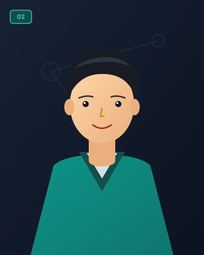
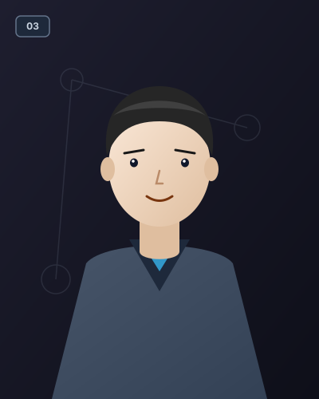

01
Visualisasi Minimum Spanning Tree
Pelajari bagaimana algoritma Kruskal dan Prim menemukan pohon merentang minimum pada graf terhubung berbobot, langkah demi langkah dengan visualisasi interaktif.
Tim Pengembang
Kelompok 3
Teknik Informatika Reguler B 2025 - Mata Kuliah Struktur Diskrit 2

02Muhammad Syehan Fahrezi Prashya

03Rafa Rasyad Anfero
04
M. Aditia Putra Pratama
Konsep Minimum Spanning Tree (MST)
Pohon Merentang Minimum adalah subgraf terhubung berbobot tanpa siklus dengan total bobot sisi terkecil.
Menghubungkan Semua Node
Spanning tree mencakup setiap simpul (vertex) pada graf tanpa ada yang terisolasi. Jika graf memiliki V simpul, maka pohon memiliki tepat V - 1 sisi (edge).
Bebas Siklus (Acyclic)
Sesuai definisi pohon pada teori graf, tidak boleh ada lintasan tertutup. Penambahan satu sisi saja pada spanning tree pasti akan membentuk siklus.
Total Bobot Minimum
Di antara semua kemungkinan pohon merentang yang dapat dibentuk, MST adalah pohon dengan jumlah total bobot sisi terkecil.
Perbandingan Algoritma
Dua pendekatan greedy utama dalam menemukan pohon merentang minimum.
Algoritma Kruskal
Edge-BasedMemproses sisi-sisi graf secara mandiri berdasarkan bobot, dari yang teringan ke terberat.
- Urutkan seluruh edge naik berdasarkan bobot (ascending).
- Pilih edge teringan satu per satu.
- Gunakan Disjoint-Set (Union-Find) untuk mendeteksi siklus.
- Jika edge membentuk siklus, tolak; jika tidak, masukkan ke MST.
- Berhenti ketika sudah terkumpul (V - 1) edge.
Algoritma Prim
Vertex-BasedMenumbuhkan pohon secara bertahap mulai dari satu simpul awal pilihan.
- Pilih satu node awal dan masukkan ke dalam himpunan MST (Visited).
- Periksa seluruh edge penghubung antara node di dalam himpunan dan di luar himpunan.
- Pilih edge dengan bobot terkecil di antara edge penghubung tersebut.
- Tambahkan edge dan node baru tersebut ke himpunan MST.
- Ulangi hingga seluruh simpul terhubung.